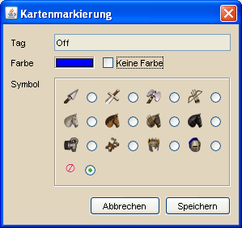

Tageinstellungen |
|
 |
|
| Die Tageinstellungen sind für die Verwaltung von Tags zuständig. Tags entsprechen im Spiel den Dorfgruppen die man anlegen kann, sofern man über einen Premium Account verfügt. Das Standardverfahren, Gruppen aus dem Spiel in DS Workbench einzufügen, ist der direkte Import. Davon unabhängig können über die Tageinstellungen weitere Tags hinzugefügt werden, die man über das entsprechende Werkzeug beliebigen Dörfern auf der Karte zuweisen kann. Für jeden Tag kann man über die Spalte Einzeichnen festlegen, ob ein Dorf das mit diesem Tag versehen ist auf der Hauptkarte dargestellt wird. Dies ist zum Beispiel sinnvoll, wenn man eine Offensivaktion plant und einen schnellen Überblick über die Off-Dörfer haben möchte, die Deff-Dörfer jedoch ausgeblenden will. |
|
| Für Dörfer die mit mehreren Tags versehen sind gilt, dass ein Dorf gezeichnet wird, sobald ein Tag des Dorfes eingezeichnet werden soll. Hat man z.B. für ein Dorf die Gruppen Deff und Fertig definiert, so muss für beide Tags das Einzeichnen Feld deaktiviert sein, um das Dorf auf der Karte zu verbergen. | |
| Zusätzlich zum ein- und ausblenden von Tags zur besseren Sichtbarkeit gibt es noch die Möglichkeit, Kartenmarkierungen zu definieren. Um dies für einen Tag einzurichten, wählt man den entsprechenden Tag in der Tabelle aus und klickt den Button Kartenmarkierung. | |
|  | |
| Nun kann man die Farbe und das Symbol für die Markierung eines Dorfes mit dem gewählten Tag festlegen. Will man eine Markierung entfernen, muss man das Feld Keine Farbe aktivieren und als Symbold den in der Abbildung gezeigten, roten Kreis wählen. | |
Wurde im Spiel eine Gruppe umbenannt und wird sie anschließend importiert, so bleibt auch der vorherige Gruppenname als Tag mit entsprechender Markierung in DS Workbench bestehen. Der alte Tag kann dann über die oben beschriebenen Einstellungen gelöscht und die Kartenmarkierung dem neuen Tag zugeordnet werden. |
|